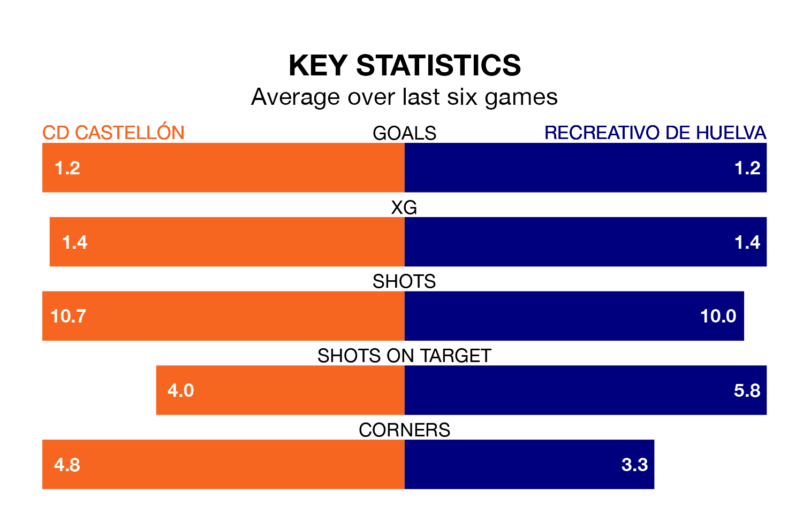

Recreativo de Huelva travel to CD Castellón on late Saturday in Primera Division RFEF Group 2.
The visitors come into the game on the back of a win in their last match, having beaten Mérida AD 3-0 at home, with goals from Caye Quintana, Antonio Domínguez Sacramento and Alberto Trapero Beloso.
Castellón also won their last match, 2-0 against Real Madrid B, with their goals scored by Bernardo Paço Almeida Queirós Rodrigues and Jesús De Miguel Alameda.
With 59 goals in 29 games so far this season, Castellón are the league's highest scorers with 2.0 goals per game. And they are conceding fewer than average, letting in 29 goals at a rate of 1.0 per game.
Recreativo de Huelva, meanwhile, are average scorers, with 1.1 goals per game. They have conceded 0.9 goals per game.
The hosts are top of the table after 29 games, of which they have won 20 and drawn three, earning 63 points.
The away side are four places behind Castellón in fifth, with 13 wins and nine draws putting them on 48 points.
In De Miguel Alameda, Castellón have the league's most on-form striker so far this season. He has notched 15 goals in 23 appearances.
His goal rate of one every 128 minutes is much quicker than that of Quintana Hernández, Recreativo de Huelva's top scorer with a goal every 267 minutes, and a total of six goals in 22 games.
The home team are in mixed form in Primera Division RFEF Group 2, with three wins and three losses from their last six games.
With two wins and two draws over that period, Recreativo de Huelva's form is slightly worse – they have taken eight points from 18, compared to Castellón's nine.
Updated: 12:39 (UTC), 26/03/24